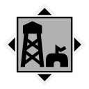

Map
Nearby locations
The 10 closest locations, measured in a straight line between the map markers (1 world unit is 1 metre), with the direction to go from here.
| Location | Kind | Region | Distance | Direction |
|---|---|---|---|---|
 Enhyttan Camping Ground Enhyttan Camping Ground | Tourist attraction | Himfjäll | 588 m | NE |
 Gardberg Mine Control Point Gardberg Mine Control Point | Control point | Forest | 739 m | N |
 Björkhagen Björkhagen | Settlement | Forest | 745 m | W |
 Himsundsbryggan Himsundsbryggan | Campsite | Himfjäll | 792 m | NE |
| Skåleklippans Jaktläger | Campsite | Forest | 794 m | NW |
 Lennarts Marin AB Lennarts Marin AB | Industry | Forest | 817 m | NE |
| Östervik Gamla Stan | Settlement | Forest | 864 m | W |
| Österviks Hamn | Port | Forest | 867 m | W |
 Readiness Storage 05 | Military base | Himfjäll | 878 m | E |
 Beredskapsförråd 119 Beredskapsförråd 119 | Bunker | Forest | 957 m | NW |
Safehouse
There is a safehouse here: IGA Industrial Facility (235 m from the location marker). Its house photo lies next to it.
Loot
The location's files list 222 loot crate spawn points. These are the crates your save counts for this location's loot progress.
Placed loot within 200 m that is closer to IGA Industrial Facility than to any other location (from the interactive map's Extra Locations layer).
| Category | Count | Breakdown |
|---|---|---|
| Weapons | 1 | Q2 1 |
| Items | 55 | Explosive Gas Tank 40, Gasoline 13, Field Radio 1, Radio 1 |
| Crate spots (map layer) | 280 | Ammo boxes 107, Equipment boxes 83, Apparel packs 60, Weapon boxes 13, Car hoods 9, Machine wrecks 5, Bodies 3 |
| Misc | 1 | Companion paint jobs 1 |
From the game files
Two crate numbers. The crate spawn points are the loot crate spawn points listed in the location files: what your save tracks for a location's loot progress. The crate spots (map layer) are every crate spot of the interactive map's loot layer within 200 m that is nearer to this location than to any other, whichever game file it comes from, so the two numbers rarely match. Neither means a crate is always there: the game may leave a spot empty.
Weapons, attachments and other single items placed here:
| Item | Quality | Count |
|---|---|---|
| Automatgevär 5 (Worn) | Worn | 1 |
| Bare Metal Paint Job | 1 |
Missions
Missions whose name, briefing or steps mention IGA Industrial Facility.
| Mission | Type | Region | Summary |
|---|---|---|---|
| Not Alone | Main Alpine Unrest | Himfjäll (Alpine Unrest) | Find a way to get over to the island of Himfjäll to find Anita's group |
From the game files
Distances are straight lines on the map between marker positions. A location's area in the game is not a circle, so the 300 m and 200 m radii on this page are a practical approximation, not the game's own borders.